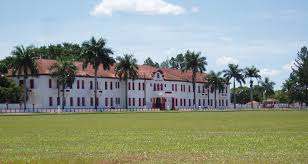

Fundação de Bela Vista
Bela Vista está localizada na região sudoeste de Mato Grosso do Sul, a 320 quilômetros de Campo Grande, capital do estado, faz fronteira com a cidade paraguaia de Bella Vista Norte (PY). As duas cidades são separadas geograficamente pelo rio Apa e unidas pela Ponte Internacional. A região foi palco da Retirada da Laguna, um dos episódios que marcou a Guerra da Tríplice Aliança – Guerra do Paraguai (1864-1870). Liderados pelo Coronel Carlos de Moraes Camisão e os paraguaios pela tropa de Solano Lopes comandados pelo Major Martinho Urbieta. Após a guerra, o rio Apa passou a ser símbolo de paz entre as duas nações. O processo de colonização têm registros de terem sido iniciados por volta de 1531, a também conhecida como Princesa do Apa, foi explorada por sertanistas portugueses, que implantaram o primeiro marco de uma civilização que hoje se reflete majestosa nas águas do histórico Rio Apa, um dos mais piscosos do Mato Grosso do Sul. Com o fim da guerra, por necessidade de um ponto de apoio comercial e de comunicação, numa pequena colina as margens do Rio Apa, foram lançados os alicerces de uma nova povoação, cuja área já se encontrava edificada a residência de José Lemes Bugre, que foi assim seu primeiro morador. Novas correntes migratórias, vindas principalmente do Rio Grande do Sul, encarregaram-se de complementar o povoamento de Bela Vista. As migrações gaúchas que aí aportaram, vieram atraídas pela exploração da erva-mate nativa, qual monopólio era mantido pela Companhia Mate Laranjeira, que lhes permitia arrancharem nas terras sob sua jurisdição. O município de Bela Vista foi oficialmente criado em 1908 e elevado à categoria de cidade em 20 de julho de 1908, após divisões com as regiões de Jardim, Caracol e Antônio João. Atualmente com 115 anos de história e beleza, Bela Vista abriga em seu solo uma grande riqueza cultural, seus visitantes irão se deslumbrar com a história de um Brasil que muitos não conhecem visitando o Museu do 10º RC Mec. Hoje, em tempos de Paz, o Monumento Nhandipá (em guarani “Nós acabamos”) homenageia os brasileiros e paraguaios, que foram mortos em combate na história da Retirada da Laguna. Sua fauna e a flora são verdadeiras obras de arte da natureza, são cachoeiras, quedas d’águas, bosques e rios como: Rio Apa, Praia do Pompílio, Cachoeira do Ita, Lago Azul, Nhandejara Puente, construções históricas como: Igreja Matriz de Santo Afonso, Igreja de Pedra São Geraldo, Igreja São Patrício, Prédios Históricos da Policia Militar, 10º RC Mec, Paço Municipal e outros atrativos que vão proporcionar com certeza, uma Bela Vista.
